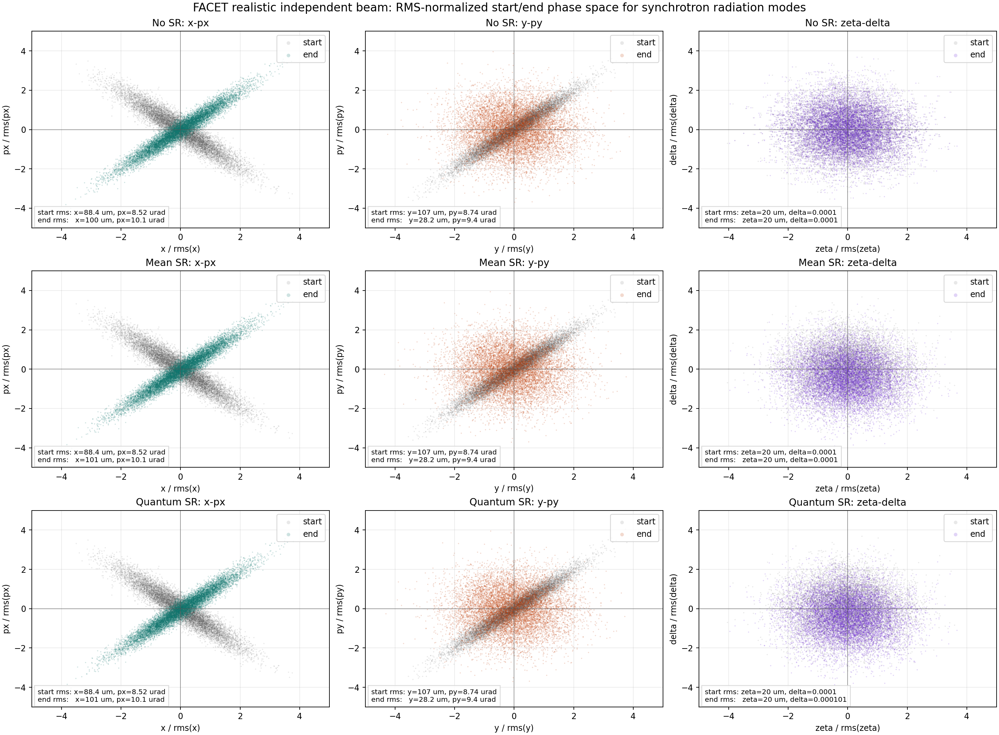

Compared three one-pass CPU tracking runs using the same realistic independent x/y FACET input distribution: no synchrotron radiation, mean synchrotron radiation, and quantum synchrotron radiation. Each run used 10,000 macroparticles and saved the start/end particle distributions.
RMS values are computed over particles with positive final state. Scientific notation is kept to expose small differences between the SR modes.
| Mode | Alive | Lost | RMS x [m] | RMS px [rad] | RMS y [m] | RMS py [rad] | RMS zeta [m] | RMS delta |
|---|---|---|---|---|---|---|---|---|
| No SR | 10000 | 0 | 1.0048185012e-04 | 1.0069683531e-05 | 2.8192655363e-05 | 9.3999159132e-06 | 2.0028992015e-05 | 1.0000529649e-04 |
| Mean SR | 10000 | 0 | 1.0062669425e-04 | 1.0073136828e-05 | 2.8182924091e-05 | 9.4028476595e-06 | 2.0028923107e-05 | 9.9997747247e-05 |
| Quantum SR | 10000 | 0 | 1.0063119487e-04 | 1.0073558970e-05 | 2.8214895289e-05 | 9.4040151032e-06 | 2.0029472011e-05 | 1.0078338876e-04 |
| Mode | Mean delta at endpoint |
|---|---|
| No SR | -3.2960543628e-07 |
| Mean SR | -3.7978583401e-05 |
| Quantum SR | -3.7919123467e-05 |
The overlaid start/end plot uses coordinates normalized by each distribution's own RMS in that dimension. The physical RMS values are printed in each panel.

facet_sr_phase_space_rms_compare.pngfacet_realistic_independent_snapshots.npzfacet_realistic_radiation_mean_start_end.npzfacet_realistic_radiation_quantum_start_end.npz